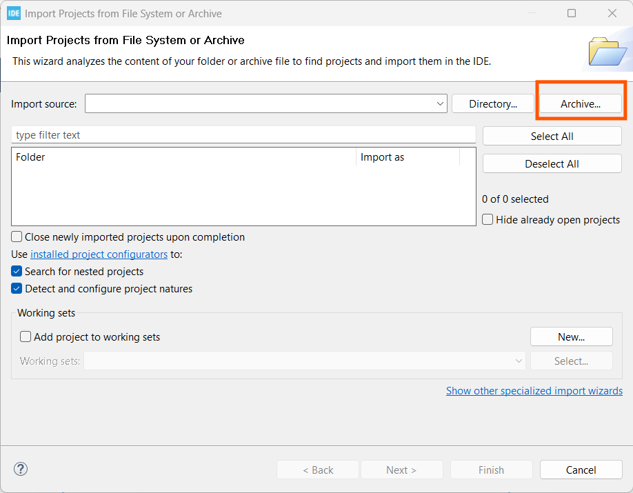
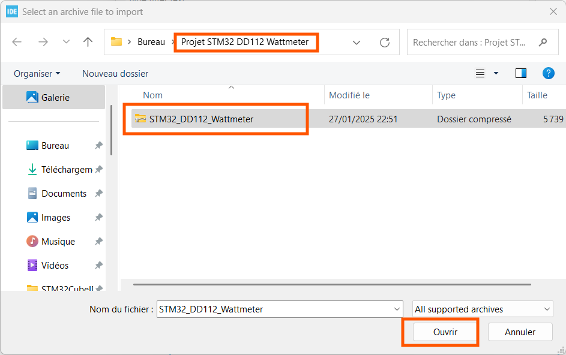
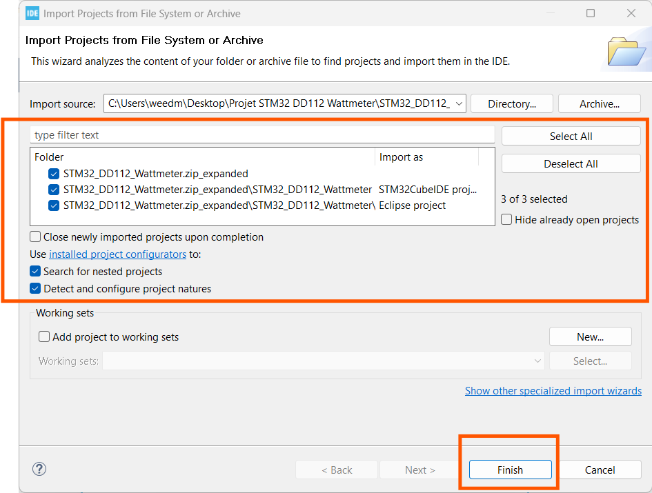

Il faut au préalable avoir installé la suite logiciel ST suivante :
On démarre STM32CubeIDE :
Ensuite, on clique sur Archive... :
On choisi l'archive du projet présente dans le dossier Projet STM32 DD112 Wattmeter à coté du Readme
On clique maintenant sur Finish
Après quelques instant, quand le programme a fini l'importation :
Si tout est correct vous devriez avoir l'écran qui affiche l'init puis les datas.